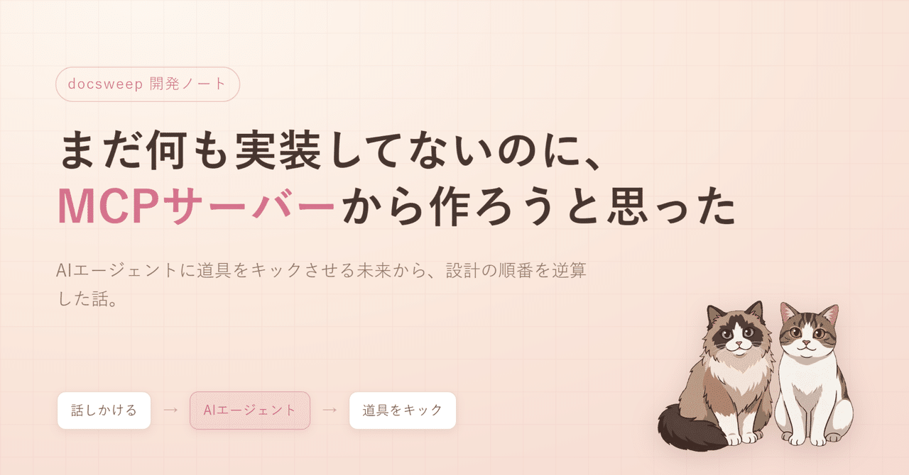

AI が書き散らした plan_*.md や bugfix_*.md を自動で片付ける道具「docsweep」を構想していたら、まだ一行も実装していないのに MCP サーバーの口から決める順番になった。最終的にコマンドを打つのは人ではなくエージェントだと気づいた瞬間、設計の入口がひっくり返った記録。
Claude Code や Codex に作業させていると、plan_*.md（計画）や bugfix_*.md（障害対応記録）が docs フォルダにどんどん積み上がる。完了したもの、寝かせたまま陳腐化したもの、別計画に統合されて死んだものが混ざる。
これを自動で片付けるツールを作ろうとしている。名前は docsweep。役割はシンプル。
archive/ に移送する最初は普通の CLI ツールのつもりだった。ターミナルでコマンドを打って整理する、Web 画面は後回し、というよくある形。設計の壁打ちをしているうちに、その順番がひっくり返った。
このツールでいちばん難しいのは、ファイルを動かす機械的な処理ではない。「この古い計画、捨てていいのか・まだ価値があるのか」を見分ける部分。
その判断、誰がやるのが自然か？ 中身を読んで「これは別の計画に統合済みだから廃止」「これは実は重要だから再開」と仕分けるのは、まさに今の LLM が得意な領域だ。
だとすると理想の使い方はこうなる。開発フォルダを Claude Code で開いて、「溜まった計画を整理して」と話しかける。エージェントが裏で道具を叩き、フラグの立ったファイルを読み、判断して片付ける。人間はコマンドを打たない。エージェントが道具をキックする。
ここで詰まった。エージェントに道具を使わせる、と一言で言っても、具体的にどうやるのか。コマンド文字列を AI に組み立てさせてターミナルに流す、でも動かなくはない。でも、ちゃんとした規格がある。
MCP（Model Context Protocol）。AI エージェントが外部の道具を「自分のツール」として直接呼ぶための共通プラグ。docsweep を MCP サーバーとして出しておけば、対応エージェントは scan（探す）/ triage（仕分けの材料を出す）/ apply（判断を反映する）を手足のように直接呼べる。コマンド文字列のパースもいらない。
そうか、と。だったら本体が完成してから後付けで MCP 対応する、では遅い。なぜならコマンドの切り方そのものが「1 コマンド = 1 ツール」の粒度になっていないと、後で必ず歪むからだ。
だから構想段階の今、まだ一行も本体を書いていないのに、MCP の口だけは先に意識して設計することにした。順番、逆に見えるけれど。
設計で一点だけ譲らないと決めたのがこれ。docsweep 自身は AI を呼ばない。
賢い判断はエージェント側にやらせ、道具は「言われた移送を、ログを残して、取り消せる形で、安全にやる」ことだけに徹する。理由は 2 つ。
道具は道具のまま、決定論的でいる。賢さは外。ここはブレないことにした。
と、ここまで威勢よく書いたが、正直まだ何も動いていない。設定ファイルの形を決めて、ステータスのラベル（計画・実行中・様子見・完了・廃止）を決めて、MCP の口の粒度を決めた。それだけ。
でも、作る前に「最終的に誰がどう使うのか」を最後まで想像してから手を動かすと、コマンドの切り方が変わる。今回いちばんの収穫はそこだった。「人間が CLI で叩く前提」と「エージェントが MCP 越しに呼ぶ前提」では、同じ機能でも分割線が違う。
MCP サーバー、勉強がてら本当に小さいやつから立ててみる。まずは scan ひとつをツールとして公開して、Claude Code から呼べたら、それが最初の「動いた」になる。そこから少しずつ。